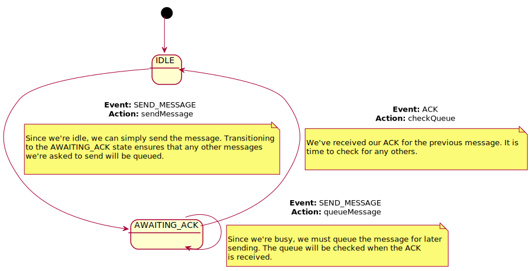

This machine manages communications using a "stop and wait" protocol. Only one message is allowed to be outstanding.
| SEND_MESSAGE | ACK | |
|---|---|---|
| IDLE | sendMessage returns:
transition : AWAITING_ACK Since we're idle, we can simply send the message. Transitioning to the AWAITING_ACK state ensures that any other messages we're asked to send will be queued. |
transition : none |
| AWAITING_ACK | queueMessage returns:
transition : none Since we're busy, we must queue the message for later sending. The queue will be checked when the ACK is received. |
checkQueue returns:
transition : IDLE We've received our ACK for the previous message. It is time to check for any others. |
| Events | |
|---|---|
| SEND_MESSAGE | |
| ACK | |
| States | |
|---|---|
| IDLE | |
| AWAITING_ACK | |
| Actions | |
|---|---|
| sendMessage |
sendMessage sends a message from the queue. The
message is expected to be there, since
checkQueue will have been previously called.
Returns:
|
| queueMessage |
queueMessage adds a message to the queue
Returns:
|
| checkQueue |
checkQueue only checks; it does not dequeue; that
is done by sendMessage.
Return SEND_MESSAGE when the queue is not empty.
Returns:
|